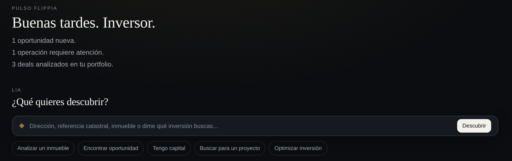
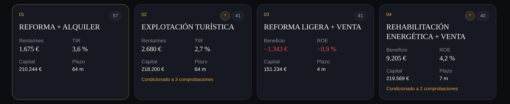
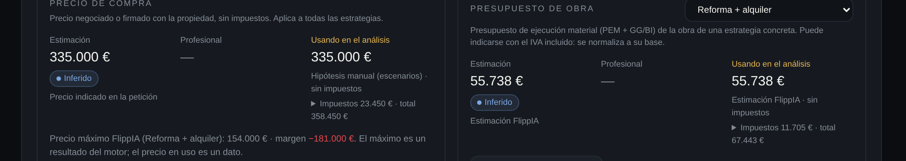
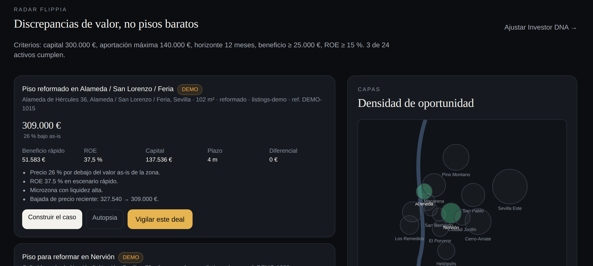

Guía de inicio para explorar oportunidades, analizar inversiones y descubrir el potencial de un inmueble.
FlippIA no busca casas, busca posibilidades. Tres pasos bastan para ver el primer resultado.
Menú Investor DNA. Indica capital, aportación máxima, horizonte, rentabilidad objetivo, riesgo, zonas y estrategias. LIA utilizará estos criterios para personalizar Radar y los análisis.
En Pulso, la barra «¿Qué quieres descubrir?» entiende lenguaje natural y ofrece accesos directos:
FlippIA convierte el inmueble en un deal y estudia diferentes estrategias posibles: qué puede ser, cuánto costaría y qué habría que comprobar.
Cuánto puedes invertir en total.
Capital propio que pondrías en un solo deal.
Cuánto tiempo quieres tener el dinero comprometido.
Rentabilidad mínima sobre tu capital.
Ganancia mínima por operación.
Tolerancia y necesidad de liquidez.
Barrios de Sevilla donde quieres buscar.
Vías que te interesan; vacío = todas.
También: perfil, experiencia, objetivo (plusvalía, rentas o mixto), financiación y cómo tributas (persona física o sociedad).

FlippIA coordina distintos análisis para estudiar qué puede hacerse con un inmueble y comparar alternativas. No busca solo pisos baratos: busca discrepancias entre lo que un activo es hoy y lo que podría llegar a ser.
Cada bloque lo trabajan especialistas que dejan evidencia: de dónde sale cada dato, con qué fecha y con qué estado de verificación. Las cifras salen de motores de cálculo deterministas; LIA explica, no inventa números.
Cobertura actual: Sevilla. Fuera del municipio cubierto, FlippIA lo dice y no aproxima.
Según el activo, FlippIA evalúa las vías que tienen sentido y las ordena explicando sus motivos. Que FlippIA detecte una posibilidad no significa que esté confirmada legal o técnicamente: cada futuro muestra su estado de verificación y las comprobaciones que requiere.

Cada deal resume la mejor estrategia con cinco indicadores. Todos salen de los motores de cálculo y se pueden desplegar hasta su fórmula.
Beneficio operativo del proyecto en el escenario base de la mejor estrategia: ingresos menos costes de venta y coste efectivo. Antes de la fiscalidad directa del inversor (IRPF o IS), que se muestra aparte.
Beneficio entre el capital propio que necesitas en el peor momento del proyecto, tras deuda y socios. Antes de IRPF o IS. En rentas, FlippIA añade TIR, cap rate y cash-on-cash.
Compuesto de nueve dimensiones: adquisición, mercado, transformación, urbanismo, arquitectura, financiación, ejecución, liquidez y riesgo. Orientativo: las dimensiones importan más que el número.
Estrategias evaluadas para ese activo. Las condicionadas («condicionado a 3 comprobaciones») no se presentan como viables hasta validarlas.
Nivel global que combina los hallazgos de los agentes adversariales (abogado del diablo, conflicto normativo, integridad de datos, anomalías) y el test de estrés.
Overview · Estrategias · Escenarios · Finanzas · Riesgo · Urbanismo · Arquitectura · Mercado · Evidencia · Passport · Actividad · LIA.
FlippIA estima cuando no sabe. Si conoces un dato real o profesional, un precio ya negociado o un presupuesto de obra del constructor, introdúcelo en Finanzas › Datos profesionales: los análisis dependientes pasan a usar ese valor, la estimación original se conserva y el dato queda marcado como Profesional con quién lo aportó, cuándo y por qué. Puedes volver a la estimación en cualquier momento.
Admite precio de compra, presupuesto de obra (materiales, mano de obra y margen comercial), honorarios técnicos y, en Fiscalidad, base imponible, impuesto liquidado y deducibilidad del IVA. Cada dato se aporta bajo la responsabilidad de quien lo introduce.
| Estimación FlippIA | 245.000 € |
| Precio negociado Profesional | 218.000 € |
| Utilizado en el análisis | 218.000 € |
| Base (sin impuestos) | 65.500 € |
| Impuestos aplicables | + impuestos |
| Total · Recuperable · Coste efectivo | desglosados |
Los importes se indican sin impuestos. FlippIA separa base, impuestos, total y coste efectivo para no confundir precio neto con desembolso real, y dice si cada cifra va antes o después de IRPF o IS.

Discrepancias de valor, no pisos baratos. Radar utiliza tu Investor DNA para detectar oportunidades compatibles con tus criterios y te explica por qué encajan.
Cada hallazgo muestra precio, beneficio rápido, ROE, capital, plazo y la estrategia que lo defiende, con sus motivos. Desde ahí puedes Construir el caso (análisis completo), ver su Autopsia (qué criterio no cumple y por qué) o Vigilar este deal. Si le hablas a LIA de un proyecto («un local para convertirlo en vivienda»), Radar evalúa cada activo con esa vía.

Desde un deal o desde Radar, «Vigilar». FlippIA avisa cuando:
Lo importante ahora, en una pantalla:
Deals reúne todas tus operaciones, con su estado: borrador, analizado, vigilado, aprobado, descartado, adquirido, proyecto o cerrado.
Toda cifra dice de dónde viene. Cada deal indica, en Passport › Fuentes y en Evidencia, qué fuente se ha consultado y en qué modo. Lo que una fuente no dio aparece como desconocido con su comprobación, nunca como un dato.
| Fuente | Modo |
|---|---|
| Sede Electrónica del Catastro (OVC) | Fuente pública |
| Gerencia de Urbanismo de Sevilla · IDE Sevilla | Fuente pública |
| Testigos propios · Idealista (API oficial) | Si están configurados |
| Mercado Sevilla | DEMO |
| FlippIA Funding (financiación) | DEMO |
| Red FlippIA (listados del Radar) | DEMO |
El modo activo de cada fuente depende de la configuración del entorno; la aplicación lo muestra siempre junto al dato. Sin scraping: solo fuentes públicas, APIs oficiales, feeds autorizados y tus propios listados.
| Fuente pública | Información obtenida de una fuente pública configurada. |
| DEMO | Información simulada o preparada para probar funcionalidades. Nunca se presenta como real. |
| Profesional | Dato introducido por un profesional o usuario autorizado, bajo su responsabilidad. |
| Verificado | Evidencia directa y fiable de la fuente. |
| Inferido | Conclusión derivada de evidencia indirecta. |
| Requiere revisión | Necesita la comprobación de un técnico o profesional. |
| Desconocido | No existe evidencia suficiente. |
| Conflicto | Fuentes inconsistentes entre sí. |
Aclaración importante. FlippIA es una herramienta de apoyo a la inversión y transformación inmobiliaria. Las estimaciones no sustituyen una tasación oficial, una licencia, una resolución administrativa ni la revisión técnica, jurídica, fiscal o profesional que corresponda. Los datos introducidos por el profesional o el usuario se aportan bajo su responsabilidad.
En Agentes (visible para cuentas administradoras; la demo lo es) puedes ver cómo FlippIA ha organizado los análisis: qué especialistas han intervenido, qué fuentes han utilizado, cuánto han tardado y qué evidencia han generado. En cada deal, la pestaña Actividad muestra lo mismo para ese análisis.